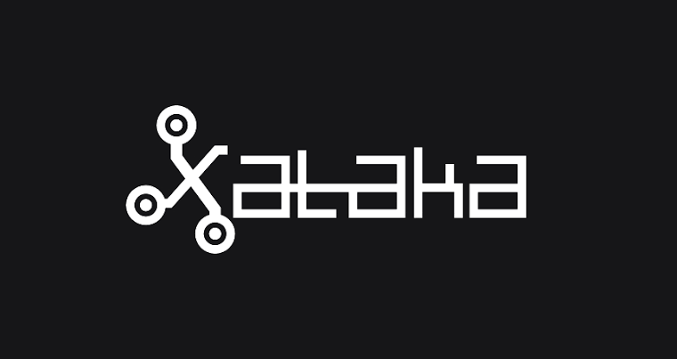
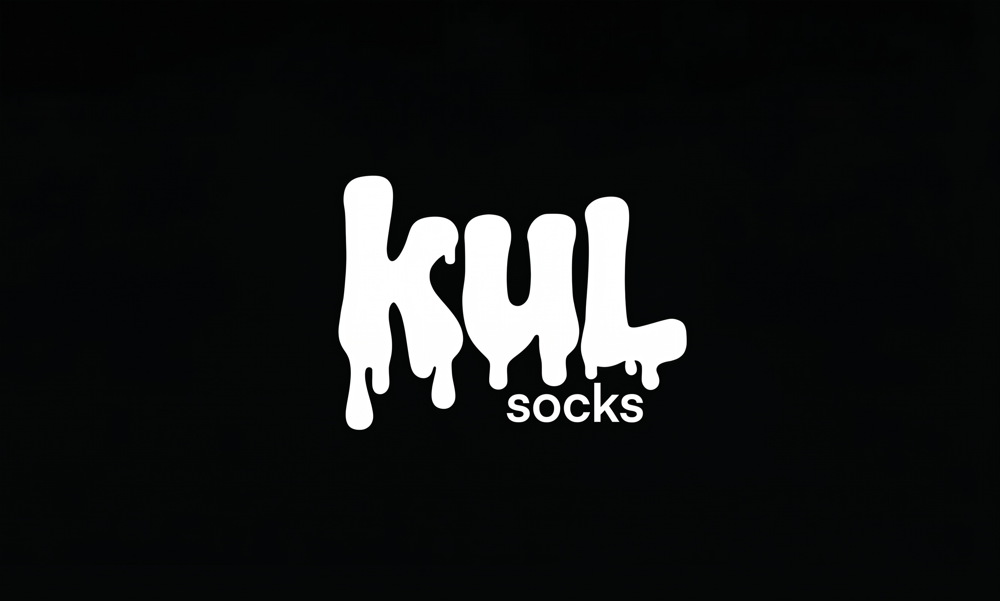
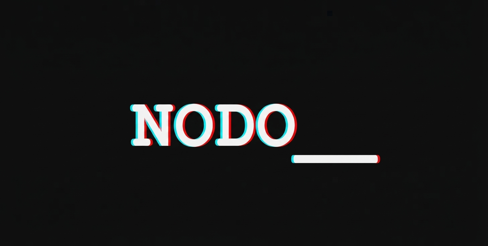
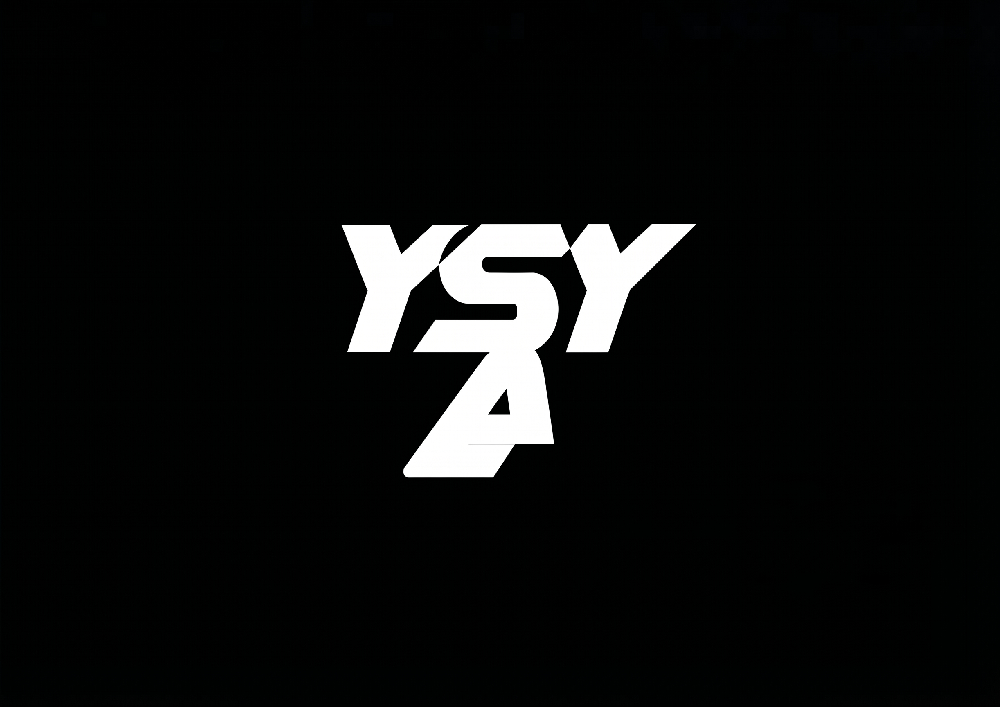

Soy Valentín Napolitan Revay, diseñador UX/UI y desarrollador web. Transformo problemas complejos en experiencias digitales accesibles y listas para producción.

Rediseño y maquetación de una landing page promocional, optimizando la jerarquía visual y la experiencia adaptativa.
Ver proyecto ↗
Creación de la identidad visual y estructuración de la interfaz orientada a la conversión para una marca de indumentaria.
Ver proyecto ↗
Desarrollo de un sistema interactivo web basado en nodos y flujos de información conectados, optimizando componentes y maquetación modular.
Ver proyecto ↗
Serie de piezas de cartelería enfocadas en la composición vectorial, el retoque digital avanzado y la jerarquía tipográfica.
Ver proyecto ↗Actualmente curso el 4to año de la Licenciatura en Diseño Multimedial en la UNLP. Mi enfoque combina la composición visual y la experiencia de usuario con la viabilidad técnica.
Como Técnico en Programación, no solo diseño pantallas, sino que entiendo la arquitectura detrás de ellas, traduciendo ideas complejas a código semántico. Además, me comunico en Inglés fluido, lo que me permite colaborar en entornos profesionales internacionales.